How the tolerance models were built, trained and tested
A plain-language guide to notebook 05_tolerance_score_modelling, sections 3–16:
which data went where, what each model learned from, and how accuracy was measured. Part II adds the poster for JHU Building
Bridges (23 October 2026): what is on it, how each panel was made, and how to present it
Results as of 21 October 2026 (final test run at 17:52, plan 9d090042fbe2). Every number below is taken
from the notebook's outputs and the saved files in results/tolerance_model/. Part II (sections 10–17) added on
22 October 2026, describing the poster as exported that afternoon.
First, the most important point
Your original goal was a model that predicts the tolerance score, so that the prediction itself becomes the tolerance score.
That model exists (§11–§13) and was tested on the validation genes in §14. But the model tested on the untouched genes in
§16 is a different design: it predicts the ClinVar label (pathogenic or benign) of each variant, and the tolerance score is one of
its inputs. Section 1 explains the two designs side by side. Section 9 lays out three ways to get back to your original goal.
Preparing for the poster? Start with Part II
Section 11 is the poster at a glance, with the numbers worth knowing by heart. Sections 12–14 explain every panel, section 15 is a short
script, section 16 lists the questions you are likely to get with answers, and section 17 is a checklist of things on the poster to fix
or be ready for. The most urgent: the poster's QR code opens an older repository, and this project's repository is private.
The short answers to your questions
How were RSA and the structural annotations included in the training data?
They were attached to every residue by a lookup on (gene, residue number) in §7–§8, giving one big table with one row per residue.
A variant then copies the row of the residue it sits on (section 4, Figure 8). They were inputs to two models: the tree model that
predicts tolerance (14g), and the variant model (14h, §16). They were deliberately not inputs to the sequence-only networks of your
original design, which see only the protein sequence.
How were ESM's weights and scores used? In three ways (Figure 7). (1) Scores: log-probabilities
from ESM-1v became four numbers per variant. (2) Representations: ESM-1v's internal description of each residue, 1,280 numbers,
fed the networks that predict tolerance. (3) Fine-tuned weights (LoRA on ESM-2) are planned for Biowulf but haven't been run.
ESM's own weights have not been changed in any model trained so far.
How were ClinVar clinical significance and gnomAD allele frequency used?
The ClinVar classification is the answer the variant model learns, and the yardstick for every accuracy number. ClinVar
variant positions (any classification) feed the ClinVar side of the tolerance score. gnomAD variant positions feed the gnomAD
side. The gnomAD allele count is used only as a filter (a variant must be seen at least twice). The gnomAD allele frequency
is not used by any model (Figure 2).
What features was the model actually trained on? The final §16 model used 42 numbers per variant in seven
groups, listed one by one in section 7, plus "was this value missing?" flags. The models of your original design used only the
sequence: amino-acid tokens, or ESM's 1,280-number representations.
Which accuracy metrics improved? For the variant model, the main metric is the AUROC: the chance that a
random benign variant gets a more benign score than a random pathogenic one. On the untouched test genes it rose from
0.62 (ESM-1v alone) to 0.89, and where ESM is unsure from 0.55 (chance) to 0.88. For the tolerance-predicting models, the metric
is the within-gene Spearman correlation. It rose from 0.02 (ESM alone) to 0.125 at best, against a maximum possible of 0.39
(section 9, Figure 29).
Contents
Part I: the models (21 October)
1. Two ways to build a tolerance model
2. The ingredients, and where each one went
3. Step 1: turning variants into a tolerance score
4. Step 2: evidence about each residue (ESM, structure, annotations)
5. How accuracy is measured
6. Design A in practice: predicting tolerance
7. Design B in practice: predicting the ClinVar label
8. The final test on untouched genes (§16)
9. What improved, and the way back to your original goal
Part II: the poster (22 October)
10. What was done on 22 October
11. The poster at a glance
12. Background panels
13. Methods panels
14. Results panels
15. Presenting it
16. Questions to expect
17. Before you present: a checklist
18. Glossary
How to read this guide
§ numbers (§3, §14, …) are section numbers in the notebook; 14a–14i and 16a–16h are its subsections.
Sections 1–2 give the big picture. Sections 3–4 explain the data, section 5 the accuracy metrics, sections 6–8 the models and
their results, and section 9 what it all means. Sections 10–17 (Part II) are about the poster. Words in bold are explained
where they first appear and again in the glossary.
Figures marked "from 14f", "from 16g" and so on are copied unchanged from the notebook's outputs. The others were drawn for this
guide from the same saved results. All figures are high resolution: zoom in on any detail.
Two designs run through the whole guide. In Design A (your original goal) the model predicts the tolerance score. In
Design B the model predicts the ClinVar label and is given the tolerance score as evidence. Section 1 explains both.
Two different collections of genes are used for checking models. The validation genes were used to compare and choose models
(§14). The test genes were used once, at the end, for the final check (§16). Results on test genes are the most trustworthy.
The running example
Most diagrams use one gene, GLRA1 (the α1 subunit of the glycine receptor, 449 residues), and one variant in it,
p.A300P: alanine 300 replaced by proline, classified as pathogenic in ClinVar. GLRA1 is a training gene, so its data were used to
fit the models but not to judge them.
1. Two ways to build a tolerance model
A machine-learning model is a formula with adjustable numbers (its weights). It is given inputs (also called
features: everything it is allowed to look at) and produces an output. While it trains, its output is compared with
the correct answer (the target), and the weights are adjusted to make the two agree better. After training, the model is
tested on data it has never seen. The choice of target decides what the model becomes.
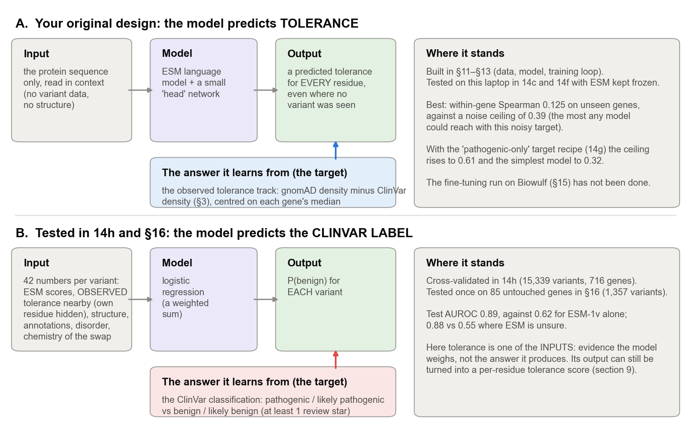
Figure 1. The two designs in this notebook. In Design A (your original goal) the tolerance score is the
target: the model learns to predict it from the protein sequence. In Design B, the ClinVar label is the target, and the observed
tolerance score is one of 42 inputs.
Design A: predict tolerance (the original goal)
The observed tolerance score (section 3) can only be computed where human variants have been seen, and it is noisy. A model that
predicts it from the protein sequence alone could give a tolerance value for every residue of any protein, smoothing out
the noise. §11 turned every protein into model input, §12 built the model (ESM-2 with a small "head" network), and §13 tested the
code on this laptop. §14 then asked whether the target can be learned at all.
Design B: predict the clinical label (what §16 tested)
Your underlying hypothesis is that human population data mark constraint that evolution (ESM) misses. The most direct test of that
hypothesis is at the level of single variants: put the human-variant evidence and the evolutionary evidence side by side, and see
whether together they separate known pathogenic from known benign variants better than ESM alone.
Why the notebook moved from A to B in §14
The tolerance target is mostly noise at the level of single residues. Built twice from two random halves of the variants, the
two versions barely agree. Even a perfect model could reach a correlation of only about 0.39 with it (section 3).
The best Design A model reached 0.125, about a third of that ceiling (section 6).
As a way to classify variants, predicted tolerance did worse than ESM alone (AUROC 0.50–0.79 vs 0.94 on the validation genes),
because one tolerance value per residue can't tell a mild swap from a drastic one at the same position.
Design B worked well: combining tolerance with ESM lifted the AUROC well above ESM alone (section 7). So 14i recommended making it
the main product, and §16 tested it.
In plain words
Your original model predicts how tolerant each residue is. The tested model predicts whether a specific variant is benign,
and uses the tolerance score as one of its clues. Design A has been built and tried, but not tested on the untouched genes, and its
GPU fine-tuning hasn't been run. Section 9 shows how the two designs can be reconciled.
2. The ingredients, and where each one went
Everything in the notebook is built from the 1,082 postsynaptic SynGO genes, using one reference protein sequence per gene
(the MANE transcript). The table lists every data source; Figure 2 shows which model used which.
Source
What it is
What was taken from it
gnomAD v4
genetic variants in about 800,000 people, with those known to have severe childhood disease excluded (a "healthy" reference population)
1,081,180 missense variants in these genes; 432,831 used: those seen in at least 2 people, with an extra rule for X-linked genes (section 3)
ClinVar
variants reported by clinical laboratories, each with a classification (pathogenic, benign, uncertain = VUS) and a review status (stars)
206,892 missense variants (any classification) for the tolerance score. As answers for Design B: 15,339 pathogenic / likely pathogenic or
benign / likely benign variants with ≥ 1 star in the training and validation genes, and 1,357 in the test genes
AIUPred
a predictor of intrinsically disordered (floppy, unstructured) regions
a disorder score and a binding-region score for every residue
ESM-1v
a protein language model with 650 million weights, trained on natural protein sequences
log-probabilities for all 20 amino acids at every residue (§4); internal representations (14c)
Structures
experimental structures (PDB) and AlphaFold predictions
solvent accessibility (RSA) for 61% of residues, AlphaFold confidence (pLDDT), binding interfaces from PDBe-KB (§7)
Figure 2. Where each piece of data was used. Columns are the places data can go: building the tolerance score,
the models of Design A, the variant model of Design B, and the labels that accuracy is measured against. A dash means "not used there".
Two things stand out: the ClinVar classification is used only as the answer (never as an input), and the gnomAD allele
frequency is not used anywhere.
Allele frequency: not used, and safer that way
Allele frequency was added to the variant table (a side request) but was never chosen as a model input. That turns out to be the safer
choice. ClinVar often classifies a variant as benign because it is common in gnomAD, so giving the model a variant's own allele
frequency would partly hand it the answer, and a high score would be circular. The variant model instead uses gnomAD variants
near the variant, with the variant's own residue hidden (section 7).
3. Step 1: turning variants into a tolerance score (§3)
The idea: positions where healthy people carry many missense variants are probably tolerant of change, and positions where
disease reports cluster are probably intolerant. Figure 3 builds the score for one gene, GLRA1 (a glycine-receptor subunit),
which is used as the running example throughout this guide.
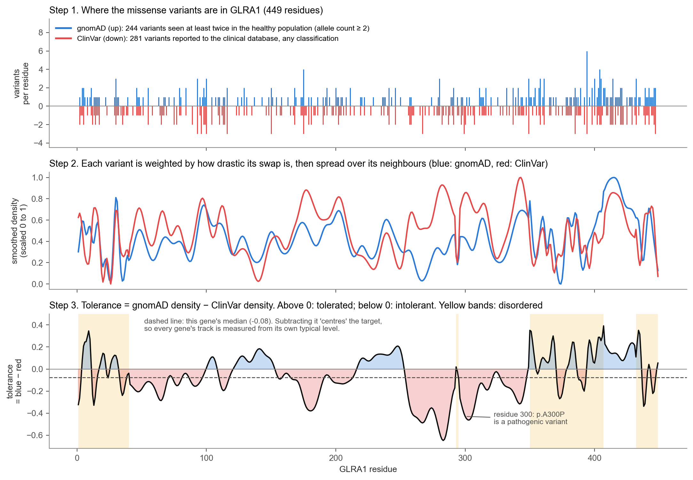
Figure 3. Building the tolerance score for GLRA1. Step 1: every gnomAD variant (up) and ClinVar variant (down) at its
residue. Step 2: each set is turned into a smooth density. Step 3: tolerance = scaled gnomAD density − scaled ClinVar density. Red
regions have more disease reports than healthy variation. Residue 300, where the pathogenic variant p.A300P sits, is in a deep
intolerant region.
The steps in detail
Choose which variants count. gnomAD variants seen in at least 2 people (a variant seen once may be a sequencing error or one
person's private variant). On the X and Y chromosomes, a gnomAD variant counts only if a man (with a single X) or a homozygous woman
carries it. A variant seen only in women with a second, normal X could be a hidden recessive disease variant. All ClinVar
missense variants count, whatever their classification.
Weight each variant by how drastic it is (Figure 4, right). Swapping alanine for serine is mild; tryptophan for cysteine is
drastic. In ordered regions the BLOSUM62 table supplies this weight, in disordered regions the Grantham distance. If several
variants sit at one residue, the most drastic one counts.
Spread each variant over its neighbours (Figure 4, left). Nearby residues usually share a fate, so each weight is spread with a
bell-shaped curve: wide (±31 residues) in ordered regions, narrow (±5) in disordered ones, where neighbours matter less. AIUPred's
disorder score decides which applies.
Subtract. Each smoothed density is scaled to run from 0 to 1 within the gene, then tolerance = gnomAD − ClinVar, so it runs from
−1 to +1.
Centre. Each gene's median is subtracted. This removes differences in overall level between genes (some genes simply have more
ClinVar submissions), so the target describes which parts of a protein are more or less tolerant than the rest of that protein.
This centred value, tolerance_v4_centered, is the target of Design A.
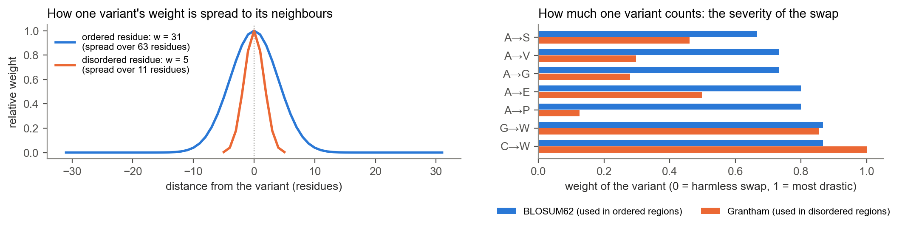
Figure 4. The two ingredients of the smoothing. Left: how far one variant's weight spreads. Right: how much one
variant counts. BLOSUM62 weights differ little between swaps (0.67–0.87 here), so in ordered regions nearly every variant counts about the
same. Grantham distances vary more. Grantham rates A→P as mild, even though a proline can break a helix: these tables measure chemistry,
not structure.
How reliable is the tolerance score? The noise ceiling (14a)
To see how much of the score is signal and how much is chance, the variants were split randomly into two halves, and the score was
built twice, once from each half. If the score were pure signal, the two versions would be nearly identical.
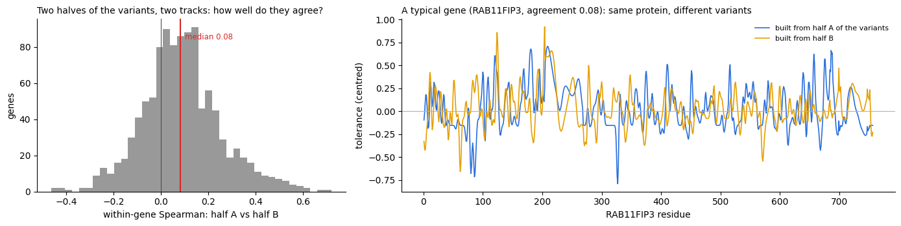
Figure 5. Two halves of the variants give two quite different tracks (from 14a). Left: the agreement (Spearman
correlation) between the two half-tracks within each gene; the median is 0.08. Right: a typical gene.
From that agreement, the reliability of the full score is about 0.15, and the noise ceiling is √0.15 ≈ 0.39: no model,
however good, could correlate more than about 0.39 with this target, because the target itself is mostly noise at single-residue
resolution. That is the yardstick for Design A (section 6). 14g later found a recipe with a much higher ceiling (0.61): building the
ClinVar side from pathogenic variants only (section 6).
4. Step 2: evidence about each residue (§4, §7, §8)
ESM: what evolution says about each position
ESM is a protein language model. It was trained on tens of millions of natural protein sequences to fill in hidden amino
acids, and in doing so learned which amino acids fit where. For each residue it gives a probability for every one of the 20 amino acids.
Positions where evolution tolerates almost no change get a narrow, confident distribution; tolerant positions get a spread-out one.
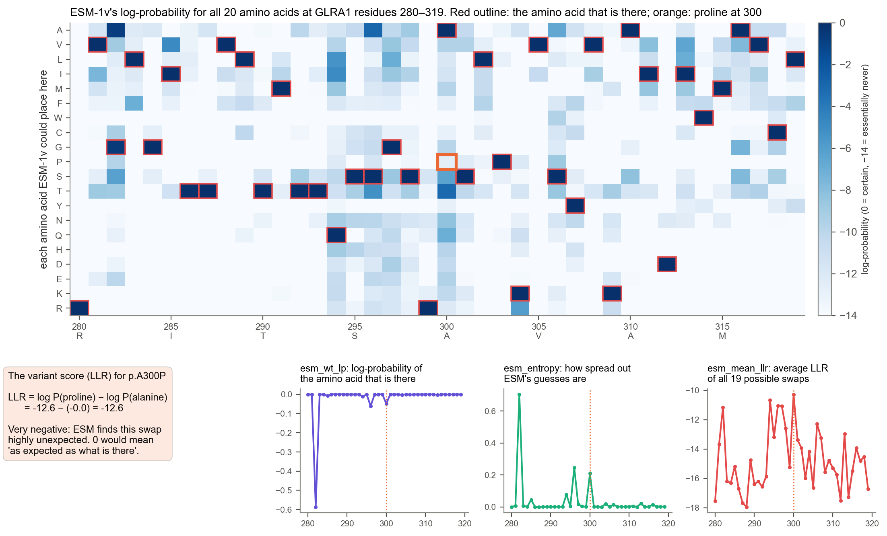
Figure 6. ESM-1v's view of 40 residues of GLRA1. Each column is a residue and each row an amino acid; darker means more
likely. ESM-1v is shown the real sequence (the "wild-type marginal" method), so the amino acid that is there gets a probability close to 1.
What carries information is how unlikely each alternative is. Bottom: the four ESM numbers used later. The LLR (log-likelihood
ratio) of a substitution compares the new amino acid with the original: −12.6 for p.A300P means proline is far less likely than alanine
here.
The four ESM numbers, all computed once in §4 and cached:
Name
Per
Meaning
esm_llr
variant
log P(new amino acid) − log P(original). Negative = the swap is unexpected; the more negative, the worse
esm_wt_lp
residue
log-probability of the amino acid that is there
esm_entropy
residue
how spread out ESM's probabilities are (low = a tightly constrained position)
esm_mean_llr
residue
the average LLR of all 19 possible swaps at this residue (one number per residue)
The three ways ESM was used
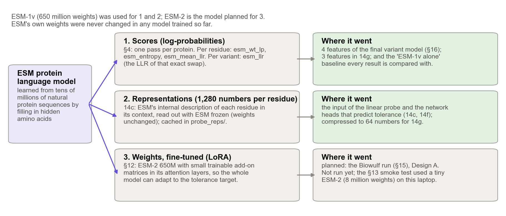
Figure 7. ESM's scores, representations and weights. Scores and representations come from ESM-1v with its weights
frozen. Fine-tuning the weights themselves (way 3) was the plan for the Biowulf run of Design A.
A representation is ESM's internal description of a residue: a list of 1,280 numbers that summarises what ESM has inferred
about that residue from the whole protein around it. It is far richer than the four scores, but it isn't readable directly. It
becomes useful only when another model learns how to translate it into the quantity you care about, here tolerance.
Structure, annotations and disorder
RSA (relative solvent accessibility): the share of a residue's surface exposed to water, from 0 (buried in the core) to 1
(fully exposed). It was computed from the best experimental chain where one exists (PDB), otherwise from the AlphaFold model, and left
empty where AlphaFold's confidence (pLDDT) is below 70. Available for 61% of residues; the rest are mostly disordered.
Interfaces: whether the residue touches another chain in any experimental structure (from PDBe-KB): a copy of itself
(iface_homo), a different protein (iface_hetero), or either (iface_any).
Annotations: yes/no flags for domains, repeats, motifs, binding regions, linear interacting peptides, PTM sites, disulfides,
ligand and active sites, conserved sites, coiled coils, transmembrane segments and signal peptides, plus a count of how many apply.
Disorder: AIUPred's disorder and binding scores, and MobiDB's curated disorder. Conservation: MobiDB's PSI-BLAST
conservation score, available for 53% of residues.
How it all comes together: one row per residue, one row per variant
Every source uses its own numbering (UniProt, PDB, AlphaFold), so §7 and §8 first translate everything onto the MANE sequence's
numbering. Then every value is a column in one table, residue_df, with one row per residue: 780,750 rows in all. A
variant needs only a lookup: which gene, which residue? This is how RSA and the annotations "entered the training data".
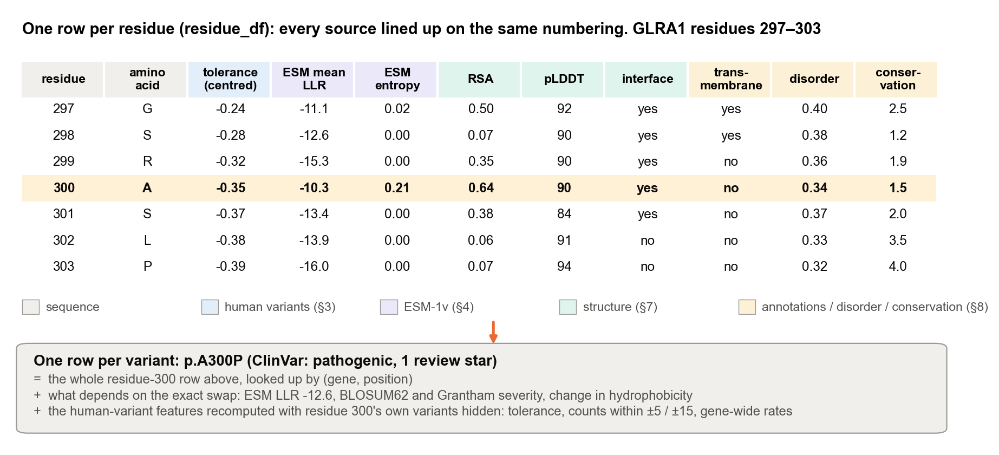
Figure 8. From residue rows to a variant row. Top: seven rows of residue_df around GLRA1 residue 300, with
columns coloured by source. Bottom: a variant's row is the row of its residue, plus what depends on the exact swap, plus the human-variant
features recomputed with the variant's own residue hidden (section 7).
5. How accuracy is measured
Data the model has never seen
A model can look perfect on the data it learned from simply by memorising it (overfitting). Accuracy therefore always has to be
measured on data kept aside. §10 split the genes three ways, keeping families of related genes (clusters: similar sequences or the
same PANTHER family) together, so a test gene never has a close relative in training:
Split
Proteins
Residues
Used for
Training
854
618,540
learning the weights
Validation
107
79,309
comparing models and choosing settings (§14)
Test
107
78,366
one final, untouched check (§16)
Within the training genes, cross-validation gives every variant an honest score: the data are cut into 5 parts by cluster, the
model is fitted on 4 parts and scores the 5th, and this repeats until every part has been scored (Figure 14, right).
For Design A: within-gene Spearman correlation
Design A predicts a whole track per protein. The question is whether the predicted track rises and falls where the real one does.
The Spearman correlation compares the ranks: +1 means the residues are in exactly the same order, 0 means no relation, −1
means reversed. It is computed within each gene, and the median over the validation genes is reported. The noise ceiling (0.39) is the
best possible score.
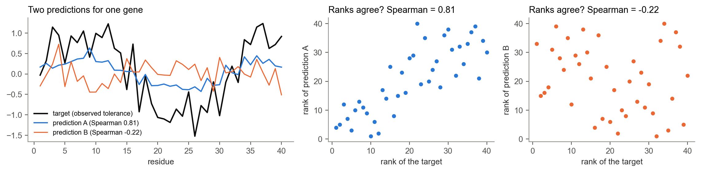
Figure 9. Spearman correlation, with made-up data. Prediction A follows the target's ups and downs (0.81) even though its
values are smaller; prediction B doesn't (−0.22). Only the ranks matter.
For Design B: the AUROC
Design B gives each variant a score. Take every pair of one truly benign and one truly pathogenic variant, and count how often the
benign one gets the more benign score. That share is the AUROC (area under the ROC curve). 0.5 is coin-flipping; 1.0 is perfect.
It doesn't depend on choosing a cut-off, and it is the same as the area under the curve traced out by sliding a cut-off from one end of
the scores to the other.
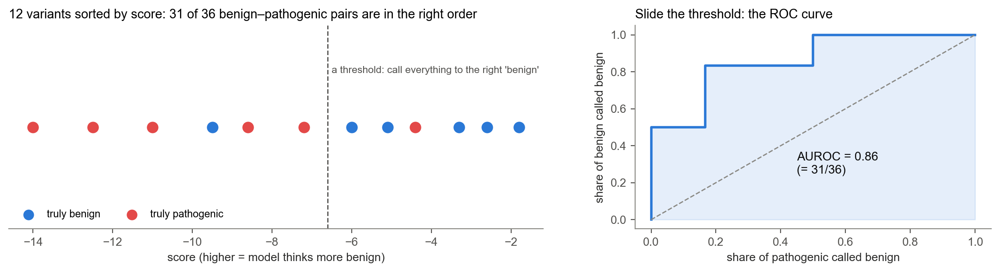
Figure 10. The AUROC, with 12 made-up variants. 31 of the 36 benign–pathogenic pairs are in the right order, so
AUROC = 31/36 = 0.86. Right: the ROC curve; its area is the same 0.86.
Three versions of the AUROC
All variants: the standard number, pooled over genes.
Within genes: the average AUROC inside each gene with at least 3 pathogenic and 3 benign variants. This is the
clinical question: in a gene we know, is this variant worse than that one? Pooling can hide or exaggerate differences
(Figure 11), so both are reported.
Where ESM is unsure: only the variants ESM-1v calls mild (its LLR is above the median for benign training variants). This is
where human data were expected to help most.
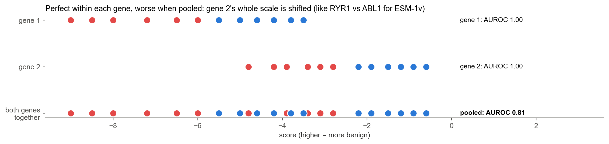
Figure 11. Why pooled and within-gene AUROC can disagree. Within each gene the score separates the classes
perfectly, but gene 2's whole scale is shifted, so pooled across genes the AUROC drops to 0.81. This happened to ESM-1v on the test
genes (section 8).
How sure are we? Bootstrap ranges
The test genes are just one sample of genes; a different sample would give somewhat different numbers. The bootstrap estimates
how much: draw the test genes again at random, with replacement, 1,000 times, recompute the score each time, and keep the middle 95% of
the results as the 95% range. Whole genes are resampled, because variants in the same gene aren't independent. To compare two
models, the difference is recomputed on each resample (a paired bootstrap). A comparison "passes" when the whole range is
above 0.
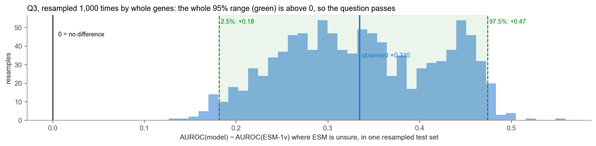
Figure 12. The bootstrap for one real result (§16, question Q3). The model's gain over ESM-1v, where ESM is unsure, was
+0.335. Across 1,000 resamples of the test genes it stayed between +0.18 and +0.47, nowhere near 0, so the gain isn't a fluke of which
genes landed in the test set.
Decisions and honest probabilities
The AUROC measures ranking. To make a call, a cut-off is needed: for example, call a variant benign when P(benign) ≥ 0.5. Then the
useful numbers are the share of pathogenic variants caught, the share of benign variants correctly cleared, and the overall
accuracy. Calibration asks whether a stated probability can be taken at face value: of the variants given P(benign) ≈ 0.8,
are about 80% really benign? The Brier score (mean squared error of the probabilities; 0 is perfect) summarises it. Both are shown
in section 8.
6. Design A in practice: predicting tolerance (14c, 14f, 14g)
Every Design A model gets the same target (the centred tolerance of each residue in the training genes) and is scored on the
validation genes by within-gene Spearman correlation. They differ in what they see.
Model
Input (features)
How it learns
Section
Linear probe
ESM-1v's 1,280-number representation of each residue, ESM frozen
a weighted sum of the 1,280 numbers (ridge regression)
the amino-acid sequence only (tokens), up to 512 residues at a time
neural networks trained from random starting weights
14f
ESM heads: MLP, CNN, BiLSTM
ESM-1v representations, ESM frozen
small networks on top of ESM
14f
Gradient-boosted trees
97 numbers per residue: 64 ESM summaries, ESM scores, amino acid, disorder, conservation, structure, annotations, position
hundreds of small decision trees
14g
ESM-2 + LoRA (planned)
the sequence, through ESM-2 with trainable add-ons
fine-tuning on a GPU
§12, §15
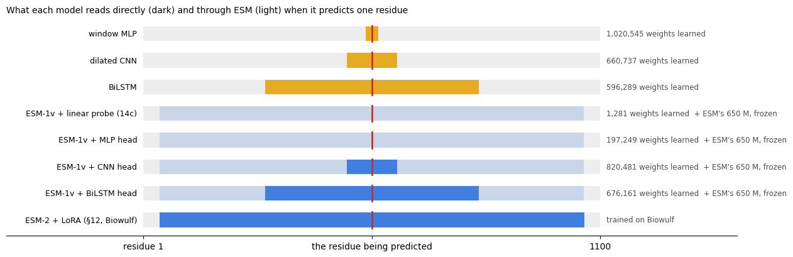
Figure 13. What each network can see when it predicts one residue (red) (from 14f). Dark: what it reads directly. Light:
context that reaches it only through ESM, which read the whole protein. The right-hand column is the number of weights learned from our
data.
How the networks were trained
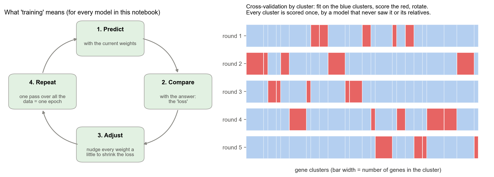
Figure 14. Training and cross-validation. Left: the loop every model repeats. Right: cross-validation by cluster,
used in 14h.
Loss: the Huber loss, a measure of how far the predicted track is from the target that is forgiving of the occasional large
miss. Padding (empty space after short proteins) never counts.
Epochs: each training protein contributes one random window of up to 512 residues per pass; 16 windows are processed at a time.
Early stopping: 10% of the training clusters are set aside. After every epoch the model predicts them, and training stops
when that score stops improving, keeping the best epoch. That is the point where the model starts to memorise rather than learn
(overfitting).
Seeds: each network was trained 3 times from different random starting weights, because small networks vary from run to run.
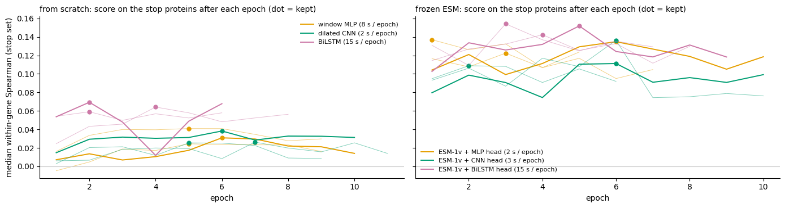
Figure 15. Early stopping in practice (from 14f). Each line is one model's score on the set-aside proteins after each
epoch; the dot marks the epoch that was kept. Most models peak within a few epochs, a sign of how little learnable signal the target
holds.
Results
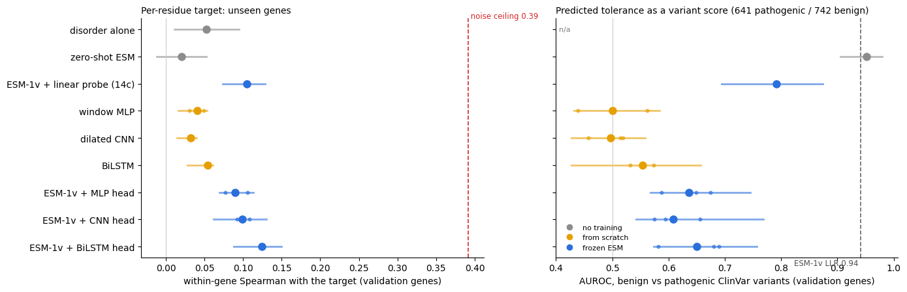
Figure 16. Design A results on the validation genes (from 14f). Left: within-gene Spearman with the target, against the
noise ceiling (red dashes). Right: the predicted tolerance used to separate benign from pathogenic variants, against ESM-1v's own LLR
(dashed line). Small dots are individual training runs; bars are 95% bootstrap ranges.
ESM's pre-training matters: networks trained from scratch on ~850 proteins reached 0.03–0.05; the same networks on frozen ESM
reached 0.09–0.125.
Context helps a little: the BiLSTM, which reads the whole window in both directions, was the best of each group.
The best model reached 0.125, a third of the 0.39 ceiling.
Predicted tolerance is a weak variant classifier (AUROC 0.50–0.79), well below ESM-1v's LLR (0.94): one value per residue can't
distinguish a mild swap from a drastic one at the same position.
Adding structure and annotations to predict tolerance (14g, part 1)
This is where RSA, interfaces and annotations were tried as inputs to Design A. A tree model got all 97 per-residue numbers, and each
group was tested alone and removed in turn.
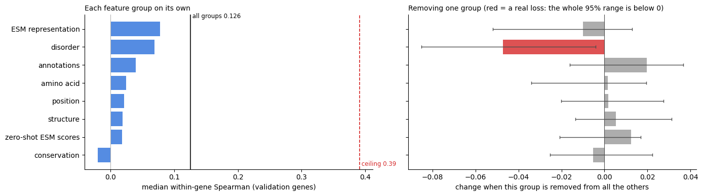
Figure 17. Which inputs help predict tolerance (from 14g). Left: each group alone. Right: the change when a group is
removed from all the others, with 95% ranges. Only disorder is a real loss (red); every other change is within the noise.
All groups together reached 0.126, essentially the same as the best ESM head. Structure and annotations add nothing reliable to this
target. One likely reason is that the target is so noisy that small, real effects disappear.
A better target (14g, part 2)
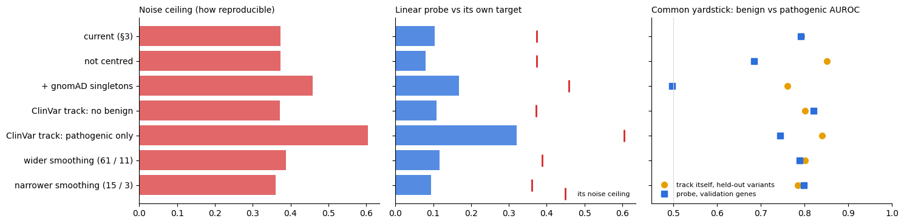
Figure 18. Changing the recipe of the target (from 14g). Left: how reproducible each recipe is (noise ceiling). Middle:
the linear probe against its own target. Right: the common yardstick, the AUROC on held-out ClinVar variants.
Building the ClinVar side from pathogenic variants only (instead of every ClinVar entry, VUS and benign included) raised the
ceiling from 0.37 to 0.61, the probe from 0.10 to 0.32, and the held-out AUROC of the track itself from 0.79 to 0.84.
Keeping gnomAD variants seen only once made the target more reproducible but less useful. This is the most promising lead for your
original design (section 9).
7. Design B in practice: predicting the ClinVar label (14b, 14h)
The motivating result (14b)
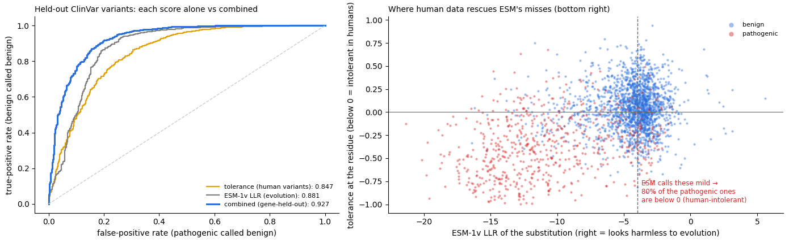
Figure 19. Human data and evolution are complementary (from 14b, on 2,477 held-out labelled variants). Left: tolerance
alone (AUROC 0.847) and ESM-1v alone (0.881) both separate pathogenic from benign; combined, 0.927. Right: among pathogenic variants that ESM
calls mild (bottom right), 80% sit in human-intolerant regions (tolerance below 0), against 42% of the benign ones.
The data and the answer
One row per labelled ClinVar variant: pathogenic / likely pathogenic versus benign / likely benign, with at least one review star.
Conflicting and uncertain classifications were left out. The training and validation genes hold 15,339 such variants (5,449 pathogenic,
9,890 benign) in 716 genes; the test genes hold 1,357.
The 42 features the final model was trained on
Feature
What it measures
ESM scores (4) — evolution, from ESM-1v (§4)
esm_llr
how unexpected this exact swap is: log P(new) − log P(original)
esm_wt_lp, esm_entropy, esm_mean_llr
how constrained the residue is: the original amino acid's log-probability, the spread of ESM's guesses, the average LLR of all 19 swaps
Human variants nearby (7) — from gnomAD and ClinVar, with the variant's own residue hidden
tolerance
the §3 tolerance score at this residue
gnomad_density, clinvar_density
the two smoothed densities that make up the tolerance score
gnomad_within_5, gnomad_within_15
number of gnomAD variants within ±5 and ±15 residues
clinvar_within_5, clinvar_within_15
number of ClinVar variants (any classification) within ±5 and ±15 residues
Gene-wide variant rates (2)
gnomad_per_residue, clinvar_per_residue
gnomAD and ClinVar variants per residue across the whole gene
Substitution type (3) — the chemistry of the swap
blosum62, grantham
how different the two amino acids are (each scaled 0 to 1)
hydrophobicity_change
Kyte–Doolittle hydrophobicity of the new amino acid minus the original
Structure (6) — from §7
rsa, plddt
how exposed the residue is; AlphaFold's confidence
buried_sasa
surface buried by partner molecules; computed for only a few showcase genes, so almost always empty
iface_any, iface_homo, iface_hetero
whether the residue touches another chain (any, a copy of itself, a different protein)
Annotations (16) — from §8
ann_* (15 flags), n_annotations
yes/no for domain, repeat, motif (curated, predicted), binding region, linear interacting peptide (curated, predicted), PTM, disulfide, ligand site, active site, conserved site, coiled coil, transmembrane, signal peptide; and how many apply
Disorder and conservation (4) — AIUPred and MobiDB
curated disorder (yes/no); conservation across related sequences
Missing values (for example, no structure for a residue) are filled with the feature's median, and a "was it missing?"
flag is added so the model can learn whether missingness matters. Every feature is then standardised (shifted and scaled to mean 0,
spread 1), so the weights are comparable.
Hiding each variant's own residue
If a variant's own position fed its human-variant features, a pathogenic variant would partly vouch for itself, and so would a second
pathogenic substitution at the same residue. So the residues with labelled variants are dealt into 5 groups, and the features of a variant
in group k come from tracks rebuilt without any variant at group-k residues.
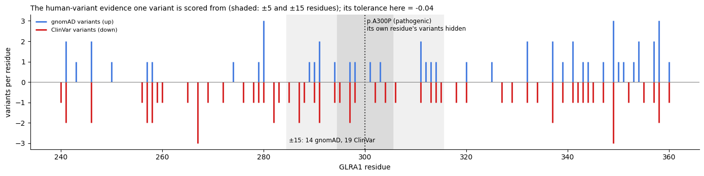
Figure 20. The evidence one variant is scored from (from 14h). The variant's own residue is hidden; the shaded windows
show the ±5 and ±15 residues counted.
The model: logistic regression
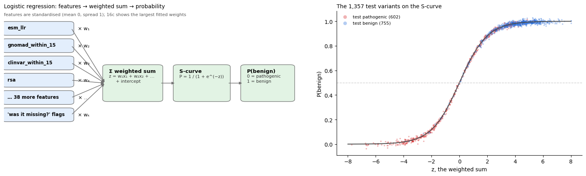
Figure 21. Logistic regression in three steps (from 16g). Each standardised feature is multiplied by its weight, the
products are added up into one number z, and an S-shaped curve turns z into a probability of being benign. Right: the
1,357 test variants on that curve.
Training means choosing the 42 weights (plus those for the missing-value flags) that make the training labels as likely as possible,
with a small penalty on very large weights. It takes a fraction of a second. Gradient-boosted trees, a small neural network (MLP) and two
networks that read raw variant positions (window CNN and BiLSTM) were also tried in 14h, all with the same cross-validation by cluster
(Figure 14, right).
Results of the cross-validation (14h)
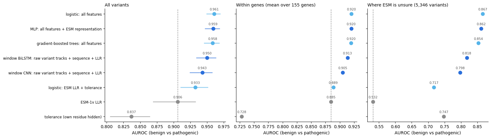
Figure 22. Every variant model, cross-validated on the training and validation genes (from 14h). The dashed line is
ESM-1v alone. The same numbers are in the table below.
Model (14h cross-validation, 15,339 variants)
All variants
Within genes (155)
Where ESM is unsure
ESM-1v LLR alone (no training)
0.906
0.885
0.532
Tolerance alone, own residue hidden (no training)
0.837
0.728
0.747
Logistic regression: ESM LLR + tolerance
0.933
0.889
0.717
Logistic regression: all 42 features (chosen for §16)
0.961
0.920
0.867
Gradient-boosted trees: all features
0.958
0.920
0.854
MLP: all features + ESM representation
0.959
0.920
0.862
Window CNN: raw variant positions + sequence + LLR
0.943
0.905
0.798
Window BiLSTM: raw variant positions + sequence + LLR
0.950
0.913
0.818
Combining all features lifts the AUROC from 0.906 (ESM-1v alone) to 0.961; within genes from 0.885 to 0.920; where ESM is unsure
from 0.53 (chance) to 0.87.
Logistic regression, trees and the MLP all land at 0.958–0.961. The simplest one was chosen for the final test.
The window networks, which learn their own smoothing from raw variant positions, came close (0.943–0.950) but didn't beat
convolve_v4 plus the other features.
Which feature groups matter?
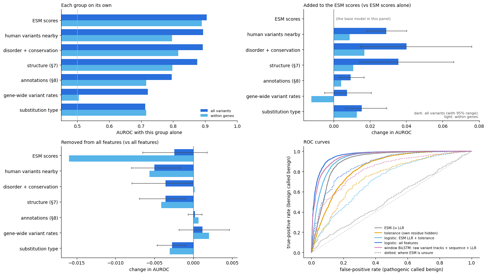
Figure 23. Feature groups, alone and in combination (from 14h, tree model). Top right is the direct test of the
hypothesis: the gain when each group is added to the ESM scores.
Added to ESM, human variants nearby gain +0.029 AUROC, structure +0.036, disorder and conservation +0.040. All three are real gains, but
removing any single group from the full model costs at most 0.005 on all variants: the groups largely carry the same information, because
they all mark constrained regions of the protein.
8. The final test on untouched genes (§16)
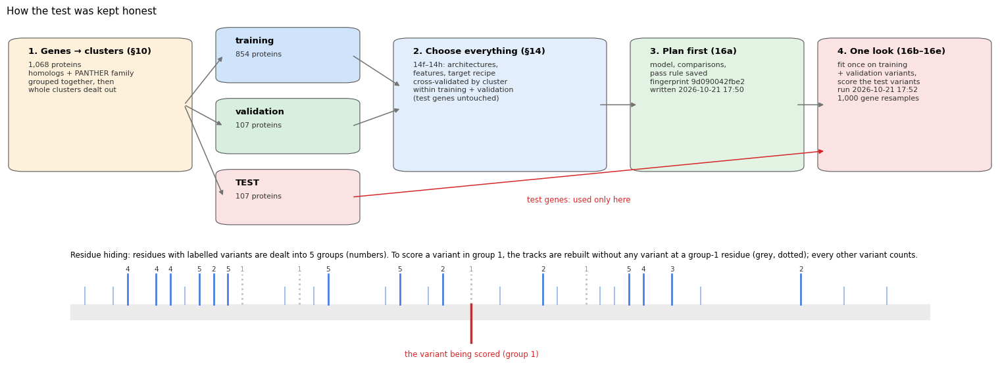
Figure 24. The safeguards that keep the test honest (from 16g): whole gene families in one split; every choice made
without the test genes; the plan saved before the test; one run; uncertainty from resampling whole genes. Bottom: residue hiding.
The plan (16a) fixed the primary model (logistic regression on all 42 features, trained on all 15,339 training and validation
variants), the comparisons, and four questions, each passing only if the whole 95% range of the difference is above 0:
Question
Result
95% range
Verdict
Q1: the model beats ESM-1v on all variants (0.890 vs 0.620)
+0.270
+0.048 to +0.447
pass
Q2: the model beats ESM-1v within genes (0.904 vs 0.749; 8 genes)
+0.156
−0.001 to +0.321
not shown
Q3: the model beats ESM-1v where ESM is unsure (0.879 vs 0.545)
+0.335
+0.182 to +0.474
pass
Q4: ESM + tolerance beats ESM alone (0.826 vs 0.620)
+0.206
+0.021 to +0.299
pass
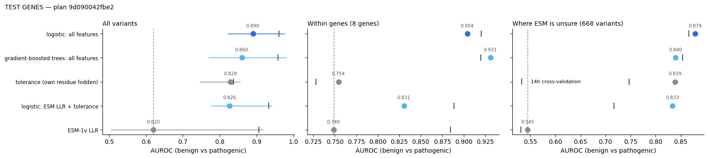
Figure 25. Every model on the test genes (from 16d). Small vertical ticks mark each model's 14h cross-validation score
for comparison.
Model (§16 test genes, 1,357 variants)
All variants (95% range)
Within genes (8)
Where ESM is unsure (668)
ESM-1v LLR alone
0.620 (0.51–0.92)
0.749
0.545
Tolerance alone, own residue hidden
0.828 (0.75–0.85)
0.754
0.839
Logistic regression: ESM LLR + tolerance
0.826 (0.78–0.94)
0.831
0.833
Logistic regression: all 42 features (primary)
0.890 (0.82–0.97)
0.904
0.879
Gradient-boosted trees: all features
0.860 (0.77–0.98)
0.931
0.840
The 95% ranges are wide because three genes hold half of the test variants: a resample that leaves out RYR1, or
includes it twice, moves the result a lot. That is why each question in the table above compares two models on the same resamples.
What the model relies on
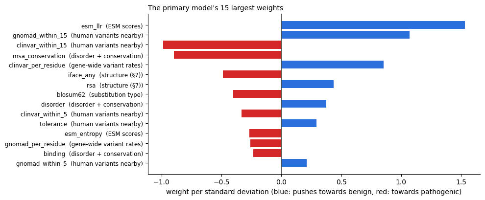
Figure 26. The final model's 15 largest weights (from 16c), per standard deviation of each feature. Blue pushes towards
benign, red towards pathogenic. The strongest is ESM's LLR, followed by the number of gnomAD variants nearby (tolerated region) and the
number of ClinVar variants nearby (disease hotspot).
Weights of features that move together (such as the ClinVar counts and the gene-wide ClinVar rate) can't be read one at a
time: the model can trade them against each other. Read the top of the list as "what the model leans on", not as separate causes.
A closer look (descriptive, after the test)
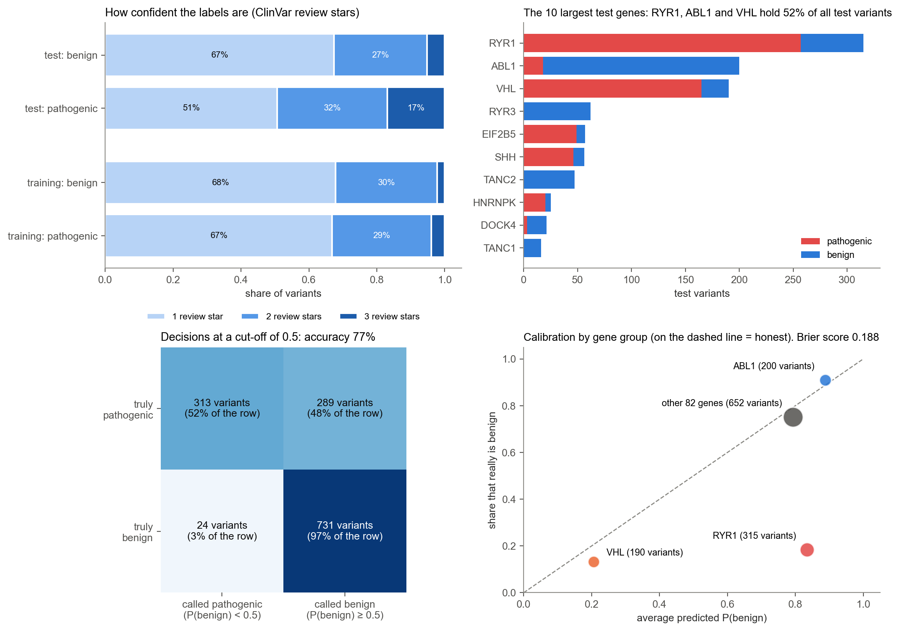
Figure 27. Labels and decisions on the test genes (redrawn from 16g). Top left: most labels in both sets rest on a
single submitter (1 star); the test set's 3-star labels come almost entirely from RYR1's expert panel. Top right: three genes hold 52%
of the test variants. Bottom left: at a cut-off of 0.5, 97% of benign variants are cleared but only 52% of pathogenic variants are caught.
Bottom right: calibration by gene group. RYR1's variants get an average P(benign) of about 0.8, although most are pathogenic.
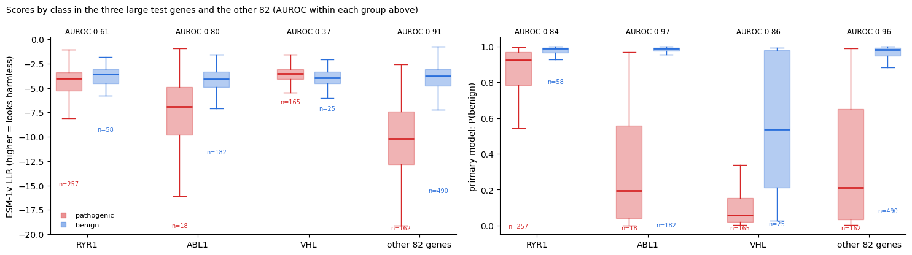
Figure 28. Why ESM-1v scored lower on the test genes (from 16g). In RYR1 and VHL, ESM gives pathogenic variants mild
scores, close to ABL1's benign ones. In the other 82 test genes ESM-1v scores 0.911 and the model 0.963, the same gap as in 14h.
What the test shows
The model works on genes nobody chose (Q1), and helps most where evolution alone is at chance (Q3). Human variant data add to
evolution in new genes (Q4).
The size of the Q1 gap partly reflects this test set. Three genes hold half of it, and ESM struggles in two of them. In typical genes
the gain is about +0.05 AUROC.
The ranking is good, but the probabilities aren't yet trustworthy for new genes. Read them as ranks or recalibrate them. A plausible
reason for the RYR1 miss: its expert-classified variants mostly concern malignant hyperthermia, which causes no symptoms without
anaesthetic triggers, so carriers can look "healthy" in gnomAD.
9. What improved, and the way back to your original goal
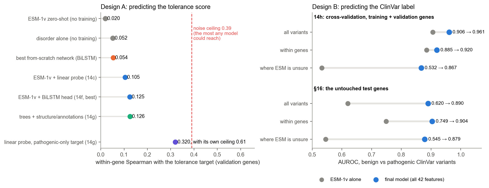
Figure 29. Every improvement in one place. Left (Design A): within-gene Spearman with the tolerance target on the
validation genes, against the noise ceiling. Right (Design B): AUROC for ESM-1v alone (grey) and the final model (blue), in
cross-validation and on the untouched test genes.
Metric
Baseline
Best result
Where
Within-gene Spearman with the tolerance target
0.020 (ESM-1v, no training)
0.125 (ESM + BiLSTM head)
14f, validation genes; ceiling 0.39
Same, with the pathogenic-only target
—
0.320 (linear probe)
14g; ceiling 0.61
AUROC, all variants
0.906 / 0.620
0.961 / 0.890
14h cross-validation / §16 test
AUROC within genes
0.885 / 0.749
0.920 / 0.904
14h / §16
AUROC where ESM is unsure
0.532 / 0.545
0.867 / 0.879
14h / §16
Accuracy at P(benign) ≥ 0.5
—
77%
§16 (52% of pathogenic caught)
Getting back to your original goal
Your goal was a model whose prediction is the tolerance score. Three routes lead there, and they can be combined:
Train Design A on the better target. Rebuild the target with the ClinVar side from pathogenic variants only
(CLINVAR_GROUPS = ("pathogenic",) in §3), retrain the ESM heads on this laptop, then optionally run the LoRA fine-tuning on
Biowulf (§15). The result is a sequence-only tolerance predictor with three times more learnable signal than now. It would need its own
pre-registered test on the test genes. That is legitimate, because no Design A choice was based on the §16 result, but it should be
reported as a separate analysis.
Turn Design B into a tolerance score. The final model can score all 19 possible substitutions at every residue: ESM,
structure, annotations and nearby human variants exist for any residue. Averaging the 19 values of P(benign) gives one
model-predicted tolerance per residue. It is available everywhere, including residues where no variant has been seen, and it comes
from a model whose variant-level accuracy has been checked on untouched genes. This is the quickest way to "a prediction score that
determines tolerance". The per-residue average itself would still need its own check, for example against the observed track.
Combine them. Feed Design A's predicted tolerance into the variant model as one more feature (§16h), so sequence-learned
tolerance and observed human variation inform each other.
In plain words
Your original idea, predicting tolerance, is still alive. It was held back by a noisy target, not by the model. With the pathogenic-only
target it becomes three times more learnable. Meanwhile, the variant model can already be turned into a per-residue tolerance score,
built from a model whose accuracy has been checked on genes nobody chose.
10. Part II: the poster, and what was done on 22 October
Part I (sections 1–9) explains how the models were built and tested. Part II covers the work done on 22 October 2026 to turn
the project into the poster for JHU Building Bridges (23 October 2026), and is meant for preparing the presentation:
Section 11 is the poster at a glance.
Sections 12–14 go through the poster panel by panel: what each one shows, how it was made, and what to say.
Section 15 is a short script.
Section 16 lists the questions you are likely to get, with answers.
Section 17 is a checklist of things on the poster to fix or be ready for.
Part I is unchanged except for one correction: the gnomAD legend of Figure 3 now says "seen at least twice (allele count ≥ 2)"
instead of "seen in ≥ 2 people", because one person carrying both copies also meets the filter.
What was done today
Task
What came out of it
Where it is
Questions about the final model
Clarified that the final model is a logistic regression that predicts each variant's ClinVar label
(as P(benign)), not a BiLSTM and not the tolerance score. Also covered which models ran on the untouched genes, and how the model might do
on VUS. The answers are folded into section 16.
this guide, sections 8 and 16
First set of poster figures
11 editable SVGs (I1, M1–M4, R1–R5) with copy-ready captions, the numbers behind them, and the
"honest limits" notes.
Protein: % similarity of human proteins to their orthologues in 17 species, for postsynaptic proteins (1,080 genes: the 1,082 in the study minus 2 not matched to Ensembl),
olfactory receptors (399) and ribosomal proteins (86).
DNA: % identity in genome alignments for 80 regulatory elements and 80 coding regions.
Changes on request: protein numbers switched from identity to similarity, and the whole-genome column replaced by coding regions.
figures/evolution_conservation.py; the downloaded data are cached in poster/conservation_cache/, which is not in
GitHub but can be re-fetched
Tolerance diagram (M0)
A schematic of the tolerance recipe on a simulated protein. The lollipop length shows severity, with a
fixed head size. It shows the wide window (w = 31) in a structured region and the narrow one (w = 5) in an unstructured region.
poster/svg/M0_tolerance_diagram.svg
GLRA1 structure figures (M3a–M3d)
The AlphaFold model (structured vs unstructured, with annotations along the C-terminal
half); core vs surface and the glycine-binding interfaces from the cryo-EM structure with glycine bound (PDB 8DN5); the database table;
an interactive 3D view.
One notebook regenerates all 17 poster figures (45 cells, about 4 minutes) and explains each one.
figures/notebooks/06_poster_figures.ipynb
Poster layout and citations
Alignment, spacing and font sizes cleaned up, the new phylogeny inserted, and 18 references added as
numbered superscripts (APA style). This was written to a new file, so the original is untouched. You then edited it further (title,
arrangement of the figures) and exported a PDF. Part II describes that final version.
~/Documents/Work/Presentations/JHU_building_bridges_10.23.26_poster_layout.pptx and .pdf; script in
tools/poster_layout/
Title
Human Variant Tolerance and Protein Structure Sharpen Missense Pathogenicity Prediction in Postsynaptic
Proteins
on the poster
Interactive explorer
A web page for exploring the data and every experiment: the tolerance score of any protein
(rebuilt in the browser, with a recipe you can change), the held-out variants, the structural classes, model choice, the untouched-gene
test and the model's weights. It is ready for GitHub Pages but not yet published.
docs/index.html in the repository;
will be at tlex36.github.io/LehrPDI-tolerance-model
GitHub repository
The code, notebooks 05 and 06, poster figures and this guide. It leaves out large data files, credentials,
HGMD data and third-party published figures.
Figure 30. The poster as exported on 22 October (48 × 36 in). Background on the left, Methods across the top right,
Results and Citations along the bottom right.
The story in one line per section
Section
What it says
Background
Most missense variants are harmless and the damaging ones are hard to spot. Evolution-based prediction (ESM)
helps. Postsynaptic proteins are highly conserved, yet they are where many neurodevelopmental-disorder mutations converge.
Methods: tolerance
A per-residue tolerance score: where healthy people carry variants (gnomAD) minus where clinical variants
cluster (ClinVar). It separates held-out ClinVar variants from gnomAD variants where ESM cannot.
Methods: structure
Each residue gets structural context: disorder, burial (RSA), interfaces, domains and motifs. Shown on
GLRA1.
Methods: encoded features
Everything is lined up per residue, then turned into 42 numbers per variant.
Results
Eight models were compared. A simple logistic regression was as good as any and, on 85 untouched genes, reached
AUROC 0.89 against 0.62 for ESM-1v alone.
The title, piece by piece. "Human Variant Tolerance" is the tolerance score; "Protein Structure" is the structural features;
"Sharpen Missense Pathogenicity Prediction" means improving on ESM-1v alone (0.89 vs 0.62); "in Postsynaptic Proteins" refers to the
1,082 SynGO proteins.
Numbers worth knowing by heart
Proteins studied
1,082 postsynaptic (SynGO) proteins; 1,070 with a usable tolerance score
Training and validation variants
15,339 ClinVar variants (5,449 pathogenic, 9,890 benign) in 716 genes
Features per variant
42
Untouched test set
1,357 variants (602 pathogenic, 755 benign) in 85 genes
AUROC on the test genes
model 0.89; tolerance alone 0.83; ESM-1v alone 0.62
Where ESM-1v is unsure (668 variants)
model 0.88 vs ESM-1v 0.55
Cross-validation
model 0.961 vs ESM-1v 0.906
12. Background panels
From genome to damaging missense variants
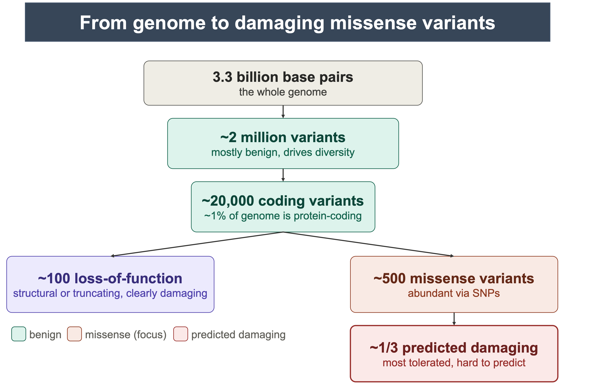
Figure 31. The problem in one flowchart. From the whole genome down to the missense variants that are hard to
interpret.
What to say: "Each of us carries thousands of protein-changing variants. Truncating variants are usually clearly damaging,
but most protein-changing variants are missense: a single amino acid swapped. Most of those are tolerated, and the damaging ones are
hard to predict. That's the gap this project works on."
Check the numbers before presenting
The flowchart has no citation, and two of its numbers are lower than the standard reference. The 1000 Genomes Project (2015) reports
that a typical genome differs from the reference at 4.1–5.0 million sites, with 149–182 protein-truncating and
10,000–12,000 peptide-altering sites. Compare that with "~2 million variants" and "~500 missense variants" on the poster. If your
numbers come from a different definition (for example rare variants only), be ready to say which; otherwise consider updating them.
"~100 loss-of-function" is in line with published estimates.
Evolutionary Scale Modelling
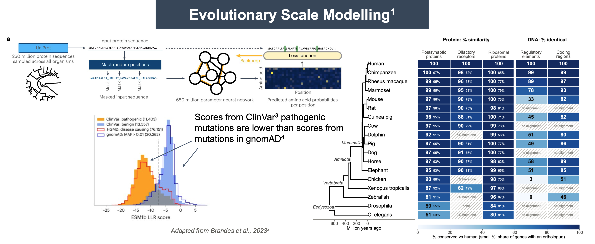
Figure 32. ESM and conservation. Left: how ESM is trained (adapted from Meier et al., 2021) and ESM-1b scores of
ClinVar and gnomAD variants (adapted from Brandes et al., 2023). Right: conservation across the species tree (Figure 33).
What ESM is: a protein language model trained on about 250 million natural protein sequences. During training it learns to
predict amino acids that have been hidden. The score for a variant is the LLR: how much less likely ESM finds the new amino acid
than the original. Strongly negative means "evolution rarely allows this".
What the histogram shows: ClinVar pathogenic variants get lower (more negative) scores than benign or gnomAD variants. This is
Brandes et al.'s figure, made with ESM-1b. Your model uses ESM-1v, a sibling trained specifically for variant effects. If
asked, the two behave similarly.
Your own numbers, held-out variants (I1, made today but not on the poster):
ESM-1v separates gnomAD from pathogenic variants well (AUROC 0.80);
it cannot tell VUS from gnomAD variants (0.48). That is the opening for human variation.
Conservation across evolution
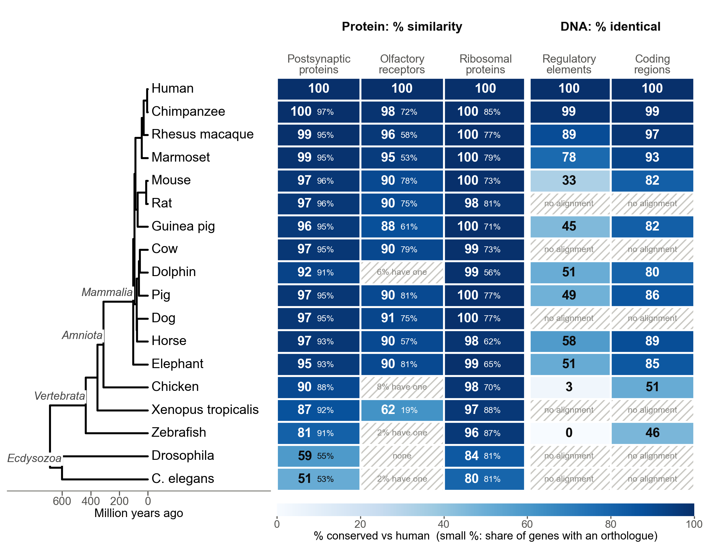
Figure 33. How much human sequence is conserved, from chimpanzee to C. elegans (Ensembl 116).
Protein columns: the median % similarity to the orthologue (bold), and the share of genes that have one (small %).
DNA columns: % of human bases identical in Ensembl's pairwise genome alignments.
Hatched cells: fewer than 10% of genes have an orthologue, or Ensembl has no genome alignment for that species.
How it was made:
Similarity counts identical amino acids plus conservative swaps (positive BLOSUM62 score), over Ensembl's orthologue
alignments.
DNA identity uses 80 randomly chosen non-promoter regulatory elements from the Ensembl Regulatory Build and 80 random coding
exons, each up to 1 kb. Bases that don't align count as not identical.
Mouse
Chicken
Zebrafish
Fly
Worm
Postsynaptic protein (similarity)
97%
90%
81%
59% (55% have one)
51% (53%)
Ribosomal protein
100%
98%
96%
84%
80%
Coding DNA (identity)
82%
51%
46%
no alignment
no alignment
Regulatory DNA
33%
3.5%
0.2%
no alignment
no alignment
What to say: "Postsynaptic proteins are highly conserved across vertebrates: 81% similar even in zebrafish. Ribosomal proteins,
the classic conserved set, are conserved across all animals. Olfactory receptors and regulatory DNA are conserved only among mammals.
So evolution constrains these proteins strongly, which is why an evolution-based model like ESM does well on them, but it can't tell us
about constraint that is specific to humans."
Points to be ready for:
Overlap between columns: all 86 ribosomal proteins are also in the postsynaptic set, because SynGO annotates postsynaptic
ribosomes (local translation at the synapse).
Few olfactory-receptor orthologues: the receptor family expands and contracts quickly, so one-to-one orthologues are rare
outside mammals.
"No alignment" for fly and worm DNA: Ensembl doesn't align the human genome to such distant species. The same holds for a few
mammals, such as rat and cow.
Convergence of neurodevelopmental-disorder mutations on synaptic genes
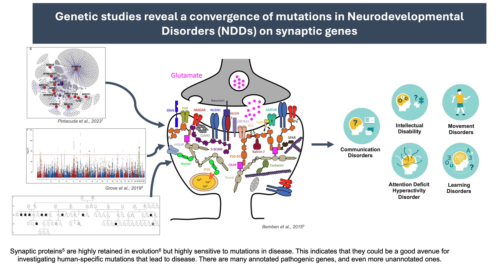
Figure 34. Why postsynaptic proteins.
Left: an interaction network of autism genes in human neurons (Pintacuda et al., 2023), an autism GWAS (Grove et al., 2019) and
a pedigree.
Centre: the synapse diagram (Bemben et al., 2015).
Right: the disorders involved.
What to say: "Genetic studies of autism and other neurodevelopmental disorders keep pointing at the same synaptic genes.
Synaptic proteins are highly conserved in evolution but very sensitive to mutation, and many of their variants are still unclassified. So
they are a good place to test whether human variation adds something that evolution can't see."
13. Methods panels
Calculating tolerance scores
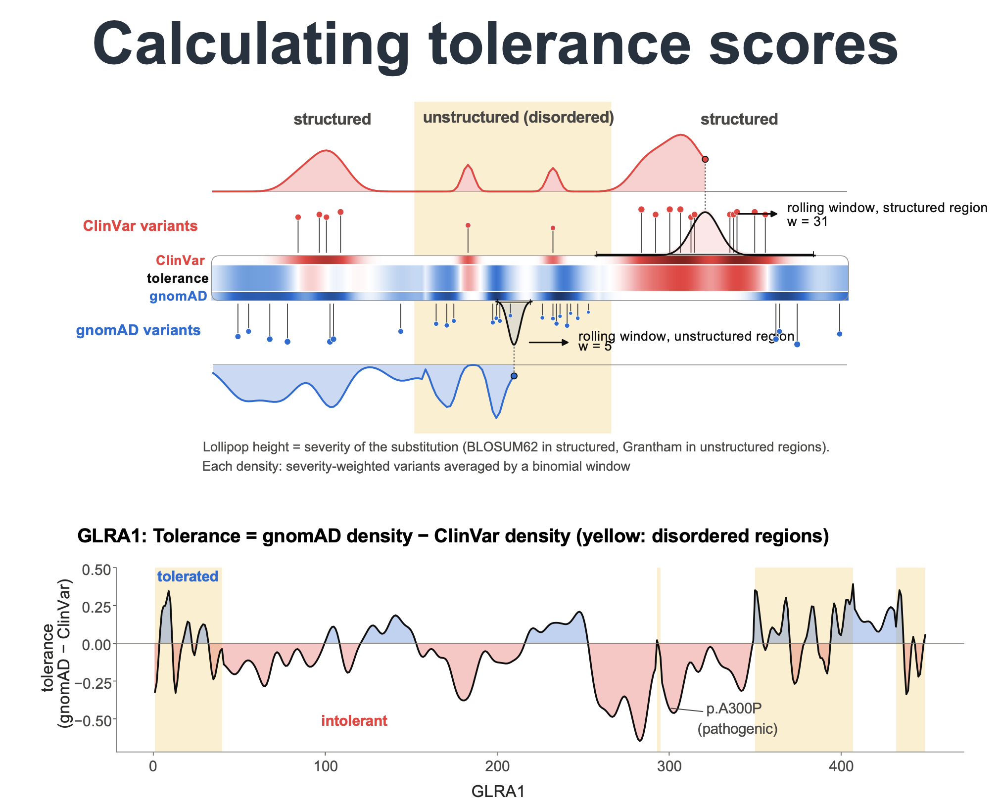
Figure 35. The tolerance recipe. Top: the schematic (M0, a simulated protein with the real recipe). Bottom: the real score
along GLRA1 (M1), with the pathogenic p.A300P in an intolerant dip.
Collect the variants: missense variants from gnomAD v4.1 (seen at least twice) and from ClinVar (any classification).
Weight each variant by how drastic its swap is, which is the lollipop length. Structured regions use BLOSUM62, which
reflects which swaps evolution tolerates in folded proteins. Unstructured regions (AIUPred ≥ 0.5) use the Grantham distance, which
measures how chemically different two amino acids are.
Smooth the weights with a binomial window: wide in structured regions (w = 31), where neighbours in the fold share constraint,
and narrow in unstructured regions (w = 5), where function sits in short motifs.
Scale and subtract: each density is scaled 0–1 within the gene, and tolerance = gnomAD − ClinVar. Above 0 (blue) means more
healthy variation than clinical reports (tolerated); below 0 (red) means intolerant.
Wording: a binomial window puts most of its weight near the centre. 97% of a w = 31 window lies within ±8 residues, and
98% of a w = 5 window within ±3. So "w = 31" is the window's full reach, not its effective width.
Tolerance scores distinguish unannotated variants
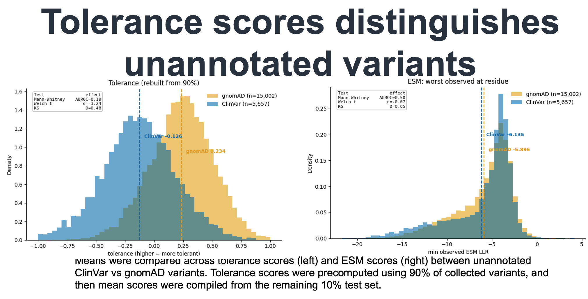
Figure 36. Held-out variants: tolerance separates ClinVar from gnomAD variants, ESM does not (from notebook 05, §6).
The test: 10% of variants were held out, and tolerance was rebuilt from the other 90%.
Which variants: held-out variants found in only one database, at residues where another substitution had been observed, so
that both scores exist. That gives 5,657 ClinVar and 15,002 gnomAD variants.
Score
ClinVar mean
gnomAD mean
AUROC
Cohen's d
KS D
Tolerance (rebuilt from 90%)
−0.126
+0.234
0.19 (i.e. 0.81)
−1.24
0.48
ESM: worst observed at the residue
−6.14
−5.90
0.50
−0.07
0.05
ESM LLR of the variant itself
−5.83
−5.65
0.51
−0.05
0.06
Reading the statistics. These are the numbers in the small boxes on the poster.
AUROC 0.19: the chance that a random ClinVar variant has the higher tolerance score than a random gnomAD variant.
Read the other way round: in 81% of pairs, the gnomAD variant sits in the more tolerant region.
Cohen's d = −1.24: the two means are 1.24 standard deviations apart, which is a large effect.
KS D = 0.48: the largest gap between the two cumulative distributions.
For ESM: 0.50 and d ≈ 0 mean no separation at all.
Be careful when presenting this panel
"Unannotated" means "every ClinVar entry". The ClinVar group is every held-out ClinVar variant whatever its classification:
mostly VUS, but it also includes some pathogenic and benign entries. Safer wording: "ClinVar variants, most of them of uncertain
significance".
Part of the separation is built in. The ClinVar side of the tolerance score counts every ClinVar entry. The held-out variant
itself was not counted, but its ClinVar neighbours were. Labs submit many variants from the same clinically tested genes and regions, so a
ClinVar variant tends to sit near other ClinVar variants. So say "ClinVar variants, mostly VUS, sit in less tolerant regions than gnomAD
variants, a difference ESM cannot see", not "VUS are pathogenic".
Cleaner evidence to point to:
ClinVar pathogenic vs gnomAD variants: tolerance AUROC 0.90 vs ESM 0.80 (M2, not on the poster);
the untouched-gene test, where tolerance alone reached 0.83 vs ESM's 0.62 (Results).
Structural features
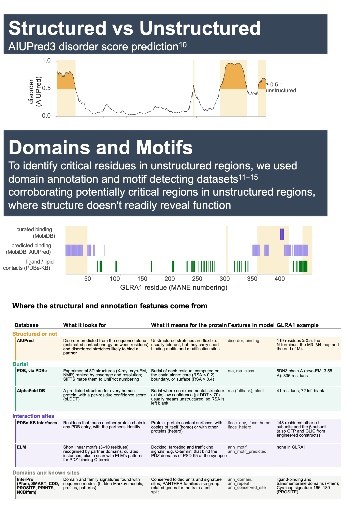
Figure 37. Structured vs unstructured, domains and motifs, and where each feature comes from (M3a tracks and the M3d
table).
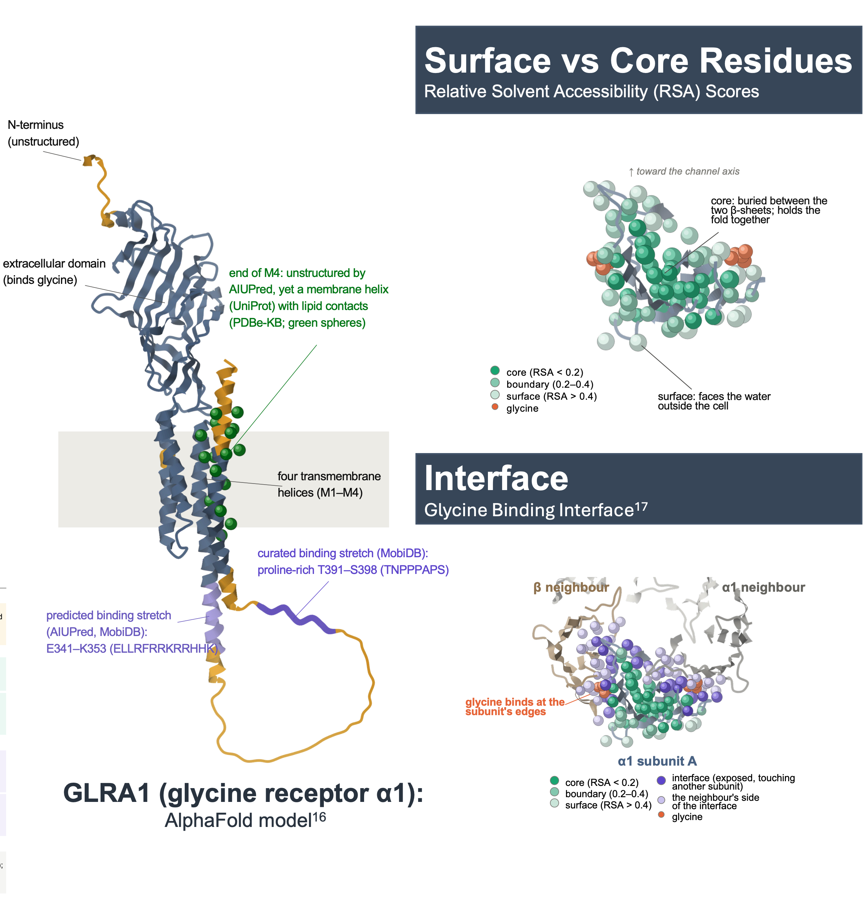
Figure 38. GLRA1 in 3D.
Centre: the AlphaFold model with structured (blue-grey) and unstructured (yellow) regions and annotated stretches.
Top right: a slice through the extracellular domain at the level where glycine binds (PDB 8DN5), coloured by burial.
Bottom right: the same slice with both neighbouring subunits, showing the glycine-binding interfaces.
Why GLRA1 as the example. It is the α1 subunit of the glycine receptor, an inhibitory channel. Its mutations cause hyperekplexia
(startle disease). It has high-quality cryo-EM structures with glycine bound, and the running example of Part I, p.A300P, is a
pathogenic variant in the short M2–M3 loop just after the second transmembrane helix, at a subunit interface.
Sub-panel
What it shows
Numbers to know
Structured vs unstructured
AIUPred predicts disorder from sequence. Residues scoring ≥ 0.5 count as unstructured. This
decides the window size and substitution table of the tolerance score, and gives the "disorder" and "binding" features.
119 of 449 GLRA1 residues are unstructured: the N-terminus, the M3–M4 intracellular loop and the end of M4. AlphaFold agrees: mean
pLDDT 63 in unstructured vs 93 in structured residues.
Domains and motifs
Unstructured regions often work through short binding motifs, so annotation databases flag functional
stretches that structure can't reveal. The table names each database, what it looks for, and what that means for the protein.
Examples in the unstructured C-terminal half:
a predicted binding stretch E341–K353 (ELLRFRRKRRHHK);
a curated proline-rich binding stretch T391–S398 (TNPPPAPS);
lipid contacts along the end of M4.
Surface vs core
Relative solvent accessibility (RSA): the share of a residue's surface exposed to water. Core < 0.2,
boundary 0.2–0.4, surface > 0.4. Core residues fill the space between the two β-sheets and hold the fold together.
The model's RSA for GLRA1 comes from cryo-EM structure 8DN3 chain A for 336 residues and from AlphaFold for 41. The remaining 72
(low-confidence regions) are left blank.
Interface
Glycine binds between two subunits, so each binding pocket is built from residues of both.
One pocket: F187, Y230 and F235 of one α1 subunit with F91, R93 and S157 of the next (mature numbering F159, Y202, F207 / F63, R65,
S129). The model's interface feature (PDBe-KB) flags 101 of the 105 contact residues seen in 8DN5.
A strong verbal point that isn't printed on the poster
The full versions of M3b and M3c end with a bar chart: the share of held-out ClinVar variants that are pathogenic in each structural
class, pooled over all genes (not only GLRA1). Exposed residues are tolerant, unless they form an interface or bind a ligand, in which
case they are as constrained as the core.
Class
% pathogenic
Variants
Ligand-binding residues
86%
99
Interface (exposed, touching another protein)
68%
174
Core (RSA < 0.2)
60%
547
Boundary (0.2–0.4)
27%
235
Surface, not interface (> 0.4)
15%
344
About the C-terminal annotations: the RFRRK core of E341–K353 matches a reported Gβγ-binding motif (Yevenes et al.,
PNAS 2008). That link comes from the literature, not from the model; check the paper before quoting it. UniProt's natural-variant
and mutagenesis annotations were deliberately excluded from the features, so clinical labels can't leak into them.
Encoded features for model training
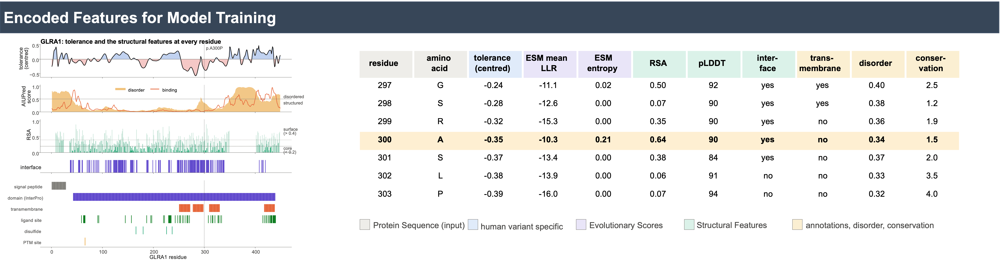
Figure 39. Every data source lined up per residue, shown for GLRA1 residues 297–303. Column colours give the type of
feature: sequence, human-variant, evolutionary, structural, and annotation/disorder/conservation.
Per residue: each residue gets one row of features. These are the tracks on the left and the table on the right.
Per variant: a variant copies the row of the residue it sits on, then adds features of the swap itself (ESM-1v LLR of that
exact change, BLOSUM62 and Grantham, change in hydrophobicity). The human-variant features are recomputed with the variant's own residue
hidden, so no variant counts towards its own score. This gives 42 numbers per variant.
Reading residue 300: it is exposed (RSA 0.64) yet sits at an interface, in a low-tolerance stretch (−0.35), with an
unfavourable ESM score. That combination is what the model reads as "likely pathogenic".
14. Results panels
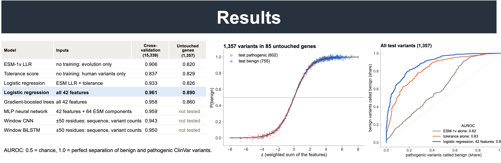
Figure 40. Results. Left: every model's AUROC in cross-validation and on the untouched genes. Centre: how the logistic
regression turns the 42 features into P(benign), with the 1,357 test variants. Right: ROC curves on the test genes.
The model table
Cross-validation: 15,339 variants in 716 genes, 5 folds, with related genes always kept in the same fold.
The finding: the simple logistic regression (0.961) matched or beat gradient-boosted trees, an MLP, a CNN and a BiLSTM. The
limit is the information in the data, not the complexity of the model.
Primary model: logistic regression was fixed as the primary model before the test.
"Not tested": the MLP, CNN and BiLSTM were left out of the test on purpose, to limit the number of chances for a lucky winner.
The MLP would also have needed ESM representations that were never computed for the test genes.
The S-curve (Figure 21 in Part I)
How it works: the model adds up the 42 standardised features with learned weights (the x-axis, z) and passes the sum through an
S-shaped curve to give P(benign).
What the dots show: test variants spread along the whole curve, so the model makes confident calls in both directions.
What it doesn't show: it does not compare against ESM; the ROC panel does that.
Hidden dots: many pathogenic test variants, mostly in RYR1, sit at the top right, hidden under the blue dots. This is the
calibration issue in section 16.
The ROC curves
Axes: the y-axis is the share of benign variants called benign; the x-axis is the share of pathogenic variants wrongly called
benign. A perfect model hugs the top-left corner.
Curves: the model (blue, 0.89) sits above tolerance alone (orange, 0.83) and well above ESM-1v alone (grey, 0.62).
Not on the poster, but have it ready: the pre-registered questions, each passing only if the whole 95% range of the difference
is above 0.
Question
Difference in AUROC
95% range
Verdict
Model beats ESM-1v on all variants (0.890 vs 0.620)
+0.27
+0.05 to +0.45
pass
Model beats ESM-1v where ESM is unsure (0.879 vs 0.545)
+0.34
+0.18 to +0.47
pass
ESM + tolerance beats ESM alone (0.826 vs 0.620)
+0.21
+0.02 to +0.30
pass
Model beats ESM-1v within genes (only 8 genes testable)
+0.16
−0.001 to +0.32
not shown
15. Presenting it
The 30-second version
"Telling harmful missense variants from harmless ones is hard. Models like ESM learn from evolution, but they
can't see constraint that's specific to humans. I built a per-residue tolerance score from human data: where healthy people carry
variants, minus where clinical variants cluster. I combined it with ESM and protein-structure features in a simple logistic regression.
On 85 postsynaptic genes the model had never seen, it reached an AUROC of 0.89, against 0.62 for ESM alone. The biggest gain was where
ESM was unsure: 0.88 vs 0.55."
The 3-minute walk-through (point at each panel as you go)
Flowchart: "We each carry thousands of protein-changing variants. Most are missense, most of those are harmless, and the
harmful ones are hard to predict."
ESM: "Protein language models like ESM learn which amino acids evolution allows. They separate pathogenic variants from
population variants well, but they score variants of uncertain significance just like healthy ones."
Phylogeny and synapse: "Postsynaptic proteins are highly conserved and are where many neurodevelopmental-disorder mutations
converge, so they are a good test bed for human-specific information."
Tolerance score: "For every residue I compare where healthy people carry variants with where clinical variants cluster. Each
variant is weighted by how drastic it is. The window is wide in folded regions and narrow in disordered ones."
Histograms: "Built from 90% of the data, the score separates the held-out ClinVar variants, mostly VUS, from gnomAD variants.
ESM can't."
Structure (GLRA1): "I add structural context: disorder, burial, interfaces, domains and motifs. In the glycine receptor,
glycine binds between subunits. Interface and ligand-binding residues are as constrained as the core, while the rest of the surface is
tolerant."
Encoded features: "Everything is lined up per residue and becomes 42 numbers per variant. A variant's own residue is hidden
when its human-variant features are computed."
Results: "Of eight models, a simple logistic regression did as well as any. I fixed it, and the comparisons, before testing on
85 untouched genes. It reached 0.89 against ESM's 0.62, and 0.88 against 0.55 where ESM was unsure."
Close: "So human population variation adds information that evolution alone misses. The next step is to test whether it
picks out VUS that later turn out to be pathogenic."
Take-home message
Human population variation, combined with protein structure, adds information that evolution-based prediction misses. On untouched
postsynaptic genes it lifted AUROC from 0.62 to 0.89, and most where ESM was uncertain.
16. Questions to expect
About the idea
What exactly does the model predict? For each variant (one amino-acid change at one position), the probability that
it would be classified benign rather than pathogenic. It is trained on ClinVar labels. It does not output the tolerance score: tolerance is
one of its 42 inputs.
How is your tolerance score different from existing constraint scores? Scores such as the missense tolerance ratio
or regional missense constraint use population variation only, comparing what is seen in gnomAD with what would be expected. This score
differs in three ways:
it subtracts the density of clinically reported variants;
it weights each variant by how drastic the swap is;
it adapts the window to structured vs disordered regions.
A head-to-head comparison with those scores hasn't been done yet.
How does it compare with AlphaMissense, REVEL or CADD? Not compared yet. ESM-1v was the planned baseline because it
is the evolution-only starting point the hypothesis is about. Several of those tools were trained or calibrated with clinical or
population labels, so a fair comparison has to remove overlapping variants. It's a natural next step.
Why postsynaptic proteins? They are highly conserved, densely annotated (SynGO, 1,082 proteins) and central to
neurodevelopmental disorders, with many variants still unclassified. The method itself isn't specific to them.
About the data
Isn't it circular to use ClinVar both in the features and as the label? That's the main risk, and there are three
safeguards:
Residue hiding: a variant's own residue is hidden when its human-variant features are built.
Gene-family splits: related genes are always kept in the same split.
Untouched test genes: the final test used 85 genes that played no part in any choice, with the plan fixed beforehand.
What remains is that ClinVar density partly reflects where labs look, which is why the results are presented as a ranking and the VUS
question is still open.
Which variants were used?
Labels: missense variants rated pathogenic/likely pathogenic or benign/likely benign in ClinVar, with at least one review
star.
Tolerance score: all ClinVar missense entries (VUS included) on the ClinVar side, and gnomAD v4.1 missense variants with an
allele count of at least 2 on the other. On chrX, a gnomAD variant counts only if a male or a homozygous female carries it.
Not used: allele frequency itself is not a feature.
Where do the structures come from? For each protein, the best-covering experimental structure via PDBe, mapped to
the MANE sequence. Where there's none, the AlphaFold model is used, with low-confidence residues (pLDDT < 70) left blank. Interfaces
come from PDBe-KB, which pools contacts across all PDB entries.
Why two window sizes and two substitution tables? In folded regions, residues that are far apart in sequence pack
together in 3D, so constraint spreads along the chain. That calls for a wide window and BLOSUM62, which reflects the swaps evolution
allows in folded proteins. In disordered regions, function sits in short motifs, so the window is narrow and severity is a plain chemical
distance (Grantham).
Could ancestry bias in gnomAD matter? Yes. gnomAD over-represents European ancestry, so variants that are common in
under-represented populations can be missed, and regions can look less tolerant than they are. That's a real limitation.
About the model
Why logistic regression and not deep learning? In cross-validation, logistic regression (0.961) matched or beat
gradient-boosted trees (0.958), an MLP (0.959), a BiLSTM (0.950) and a CNN (0.943). When a simple model does as well, the limit is the
information in the data. The simple model is also easier to check and to interpret.
What does the model rely on? Its largest weights, per standard deviation of each feature:
ESM-1v LLR: +1.53 (towards benign);
gnomAD variants within ±15 residues: +1.07;
ClinVar variants within ±15 residues: −0.99 (towards pathogenic);
then conservation (−0.90), interfaces (−0.49), exposure (+0.44) and swap severity (−0.40).
The tolerance score itself gets +0.29, because the raw counts carry the same information and share the credit.
Does structure add anything beyond ESM? Yes. In cross-validation, adding each group to ESM's scores improved the
AUROC:
structure: +0.036;
disorder and conservation: +0.040;
human variants nearby: +0.029.
All three gains are clearly above zero. They overlap because all three mark constrained regions.
About the results
ESM-1v usually scores around 0.9. Why only 0.62 here? The test set is dominated by three genes: RYR1, ABL1 and VHL
hold 52% of its variants. ESM gives pathogenic variants in RYR1 and VHL mild scores. In the other 82 test genes ESM-1v scores 0.91 and the
model 0.96, the same gap as in cross-validation (0.906 vs 0.961).
Is the improvement statistically significant? Yes, for the three main questions, with 95% ranges from resampling
whole genes:
all variants: +0.27 (+0.05 to +0.45);
where ESM is unsure: +0.34 (+0.18 to +0.47);
ESM + tolerance vs ESM alone: +0.21 (+0.02 to +0.30).
The within-gene comparison (+0.16) wasn't significant, because only 8 test genes had enough variants of both kinds.
What does "pre-registered" mean here? Before the test genes were scored, the plan was saved with a fingerprint
(9d090042fbe2): the primary model, the comparisons and the pass criteria. It was then run once. It's an internal registration,
not a public registry, so say "fixed in advance" if asked.
Are the probabilities reliable? Not yet. At P(benign) ≥ 0.5, 97% of benign test variants were classified correctly
but only 52% of pathogenic ones, mostly because of RYR1. Read the output as a ranking within a gene, or recalibrate it.
Limits and next steps
Can it find which VUS are pathogenic? Not measured yet. The test used confidently classified variants, which are
the clearer cases, so expect lower performance on VUS. The cleanest test is a time split: take a ClinVar release from a few years ago,
rebuild the features from it, and check whether VUS that were later reclassified as pathogenic ranked higher than those later called
benign. Lab-measured effects (deep mutational scans in MaveDB) and de novo variants in patients are other options.
What about genes with few known variants? The human-variant features need variants nearby. Where few have been seen,
those features carry little information and the model leans on ESM and structure.
What's next?
The VUS time-split test.
Calibration.
A comparison with AlphaMissense and other tools.
Scoring all 19 possible swaps at every residue to turn the model into a per-residue predicted tolerance.
Your original design: predicting tolerance from sequence, with the cleaner pathogenic-only target (section 9).
Phylogeny: why is regulatory DNA so poorly conserved? Regulatory elements turn over quickly in evolution, and
most elements in the Regulatory Build aren't deeply conserved. Bases that don't align count as not identical, so many elements score near 0
outside mammals. Coding DNA is far more conserved, and protein more again, because many DNA changes don't alter the amino acid.
17. Before you present: a checklist
These come from reading the exported poster closely. The first three are worth fixing before printing if there's still time; the
rest are things to be ready for.
#
What
Details and suggestion
1
The QR code points to a different repository
It opens
github.com/AlexanderWLehr/Lehr-etal-Gene-2024, an earlier project. This project's repository,
github.com/tLex36/LehrPDI-tolerance-model, is private, so visitors couldn't open it anyway. If you want people to
reach this work, make that repository public (gh repo edit tLex36/LehrPDI-tolerance-model --visibility public
--accept-visibility-change-consequences) and replace the QR code. Otherwise, be ready to say what the QR code links to.
2
Flowchart numbers
"~2 million variants" and "~500 missense variants" have no source and are lower than the
1000 Genomes figures (4.1–5.0 million sites; 10,000–12,000 peptide-altering). See section 12.
3
Heading and caption of the histogram panel
"Tolerance scores distinguishes" should be "distinguish". The
first line of the caption below the histograms is partly hidden behind the figure.
4
"Unannotated variants"
The ClinVar group is every held-out ClinVar entry, mostly VUS. Consider "ClinVar
variants (mostly VUS)", or be ready to explain (section 13).
5
Citations
Reference 18 (Lehr et al., 2025) has no superscript anywhere on the poster, and the pedigree under
the GWAS plot has no source. If the pedigree comes from reference 18, adding ¹⁸ under it fixes both. Also confirm that the synapse
diagram is credited as you intend ("Bemben et al., 2015" vs "adapted from").
6
The phylogeny has no caption
Be ready to explain the bold number (median % similarity), the small % (share of
genes with an orthologue) and the hatching (too few orthologues, or no genome alignment).
7
ESM-1b vs ESM-1v
The histogram from Brandes et al. uses ESM-1b; your model and baseline use ESM-1v.
8
Gβγ motif in GLRA1
Only if you mention it: check Yevenes et al. (2008) first.
9
Rows missing from the database table
The poster's version of the table leaves out the MobiDB and UniProt
rows (references 12 and 13), although MobiDB also labels the binding tracks above it. If asked: MobiDB adds curated and predicted disorder
and binding regions (LIPs); UniProt adds known sites (ligand binding, transmembrane segments, modifications).
18. Glossary
Term
Meaning
AIUPred
a predictor of disordered (unstructured) protein regions and of disordered binding sites, from sequence alone
AlphaFold
a model that predicts protein structures; its database has a predicted structure for every human protein
AUROC
the chance that a random benign variant gets a more benign score than a random pathogenic one. 0.5 = chance, 1 = perfect
BLOSUM62, Grantham
tables of how different two amino acids are (evolutionary substitution rates; chemical distance)
Bootstrap, 95% range
resampling the genes with replacement many times and keeping the middle 95% of the recomputed results
Calibration, Brier score
whether stated probabilities match observed frequencies; the Brier score is their mean squared error (0 = perfect)
Centring
subtracting each gene's median tolerance, so each track is measured from its own typical level
Cluster
a group of related genes (similar sequence or same PANTHER family), always kept in the same split
Cohen's d
the difference between two means in units of their standard deviation; 0.8 or more is usually called large
Cross-validation
fitting on 4/5 of the data and scoring the other 1/5, rotating, so every item is scored by a model that never saw it
Early stopping
ending training when the score on set-aside data stops improving
Epoch
one pass over all the training data
ESM-1v, ESM-2
protein language models (650 million weights) trained on natural protein sequences
Feature, input
a number the model is allowed to look at
Fine-tuning, LoRA
continuing to train a pre-trained model on a new task; LoRA trains small add-on matrices instead of all its weights
Frozen
a pre-trained model whose weights are kept fixed while something on top of it is trained